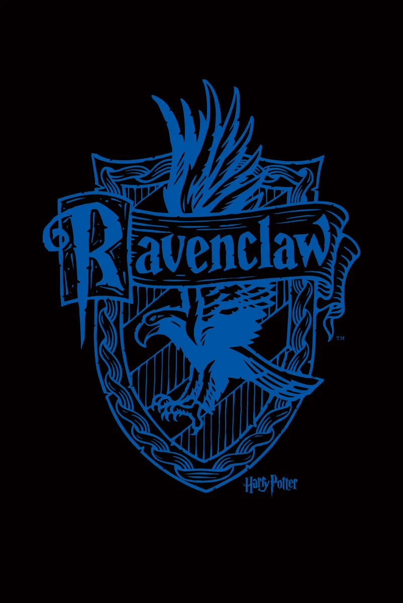

Tipologia
Aqui estão algumas tipologias minhas:
MBTI=INTJ – Arquiteto
O que é MBTI?
O MBTI (sigla em inglês para “Myers-Briggs Type Indicator”) é um teste de personalidade criado por Isabel Briggs Myers e sua mãe, Katherine Briggs, baseado na teoria de personalidade de Carl Jung.
Jung foi um psiquiatra e psicólogo suíço que desenvolveu a teoria das funções psicológicas, que descreve quatro tipos de funções mentais que as pessoas utilizam para processar informações e tomar decisões: Sensação, Intuição, Pensamento e Sentimento. Ele também descreveu os tipos de personalidade com base em como as pessoas utilizam essas funções.
Sobre o meu MBTI em específico:
INTJs tendem a ser introvertidos e preferem trabalhar sozinhos.
Os INTJs olham para o quadro geral e gostam de se concentrar em informações abstratas em vez de detalhes concretos.
INTJs colocam mais ênfase na lógica e nas informações objetivas, em vez de nas emoções subjetivas.
INTJs gostam que seu mundo pareça controlado e ordenado, então eles preferem fazer planos com bastante antecedência.
TEMPERAMENTO= Colérico
Os temperamentos são aspectos da nossa personalidade que caracterizam o nosso comportamento. Eles são relacionados com a forma de ver o mundo, os interesses, habilidades e valores de cada um.
Colérico
Pessoas com temperamento colérico são mais explosivas e agressivas do que as demais.
São pessoas dominadoras, ambiciosas, determinadas, impulsivas, comandam e lideram e são bons planejadores. Em algumas situações são intolerantes, egocêntricos e impacientes.
ENEAGRAMA= 6W5
Podemos chamar o Eneagrama de sistema, pois através dele é possível compreender um pouco mais da psique humana, como por exemplo, o que fazemos e o que nos motiva a realizar determinadas ações.
O Eneagrama é desenhado como uma figura geométrica, nela estão representados os 9 tipos de personalidades comuns na natureza humana. Essa figura de nove pontas pode ser um grande passo para o desenvolvimento, já que ela nos permite chegar a um nível de mais autoconhecimento quando usada de maneira correta.
Sobre o meu Eneagrama
Indivíduos do Enneagrama Tipo Seis asa Cinco (6w5) combinam as características do Tipo Seis e do Tipo Cinco para criar um tipo de personalidade único. Essas pessoas são leais, solidárias e dedicadas às suas famílias, amigos e crenças. Elas têm um forte senso de justiça e equidade, e abordam problemas de forma analítica, confiando em fatos em vez de intuição. Independentes e determinados, 6w5 são persistentes diante de desafios, mas também podem experimentar ansiedade e ambivalência.
CASA DE HOGWARTS= Corvinal
A Corvinal é uma casa conhecida pela inteligência de seus membros. Ela valoriza a aprendizagem, sagacidade, sabedoria e intelecto.
Além disso, os Corvinais podem ser bem excêntricos, originais e criativos. É comum para eles utilizarem feitiços ou procurarem magias que alunos de outras casas não possuem conhecimento.

Página Inicial